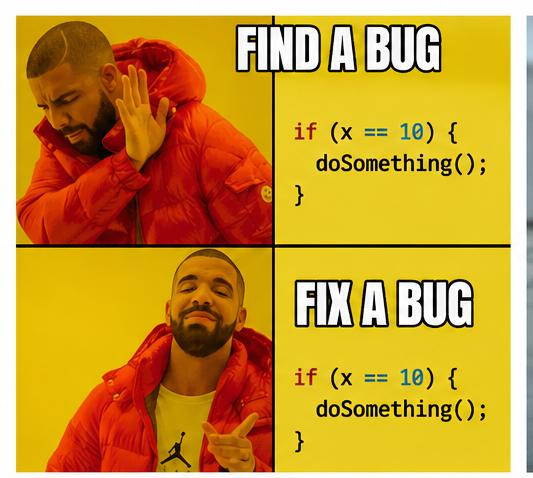
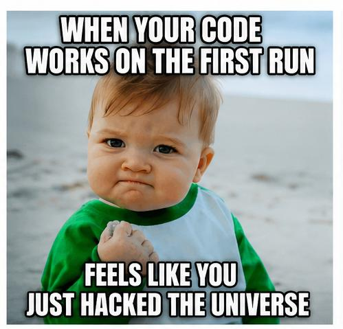
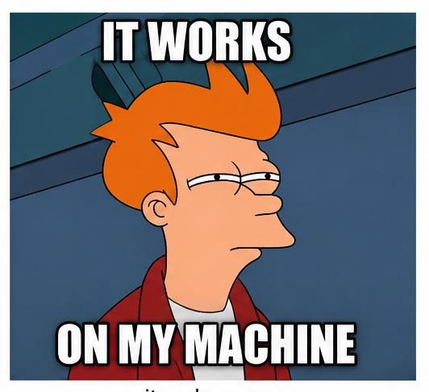
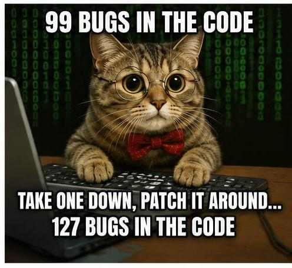
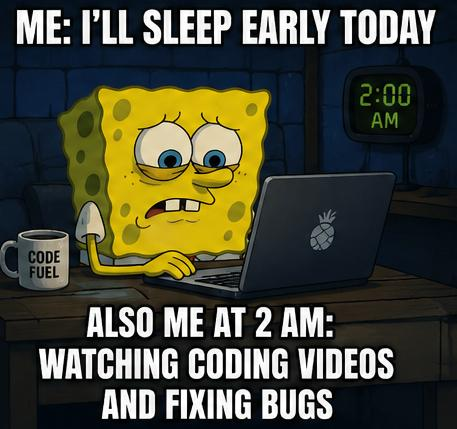
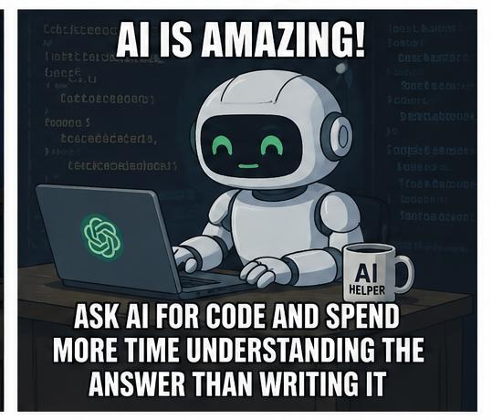

Welcome to Tech Meme Hub! A place where programmers and tech enthusiasts laugh at coding struggles, bugs, and debugging adventures.

Debugging: Because fixing errors is also an adventure.

When your code works on the first run: A legendary moment for every programmer.

It works on my machine. Every developer's favourite excuse.

99 bugs in the code, take one down, patch it around... 127 bugs in the code.

Me: I'll sleep early today.
Also Me at 2 AM: Watching coding videos and fixing bugs.

Ask AI for code and spend more time understanding the answer than writing it.
❤️ Made by Developers, for Developers ❤️